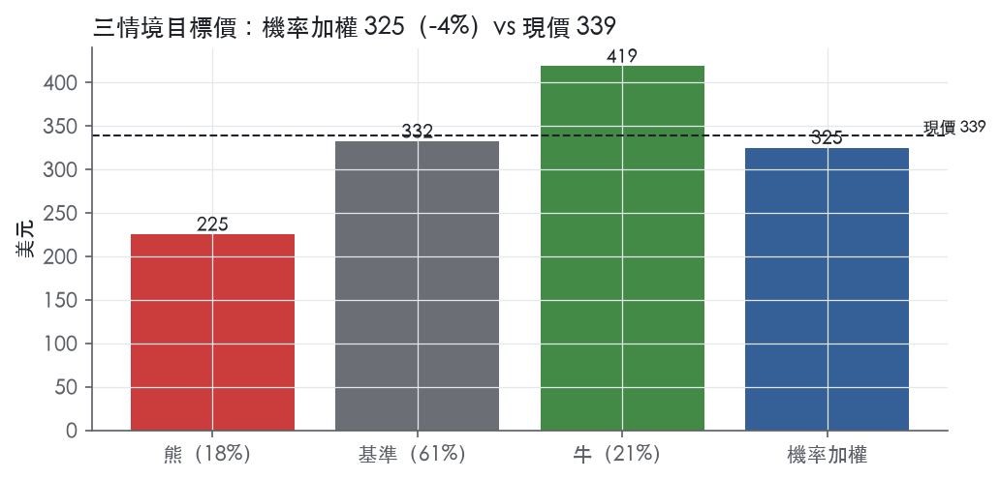
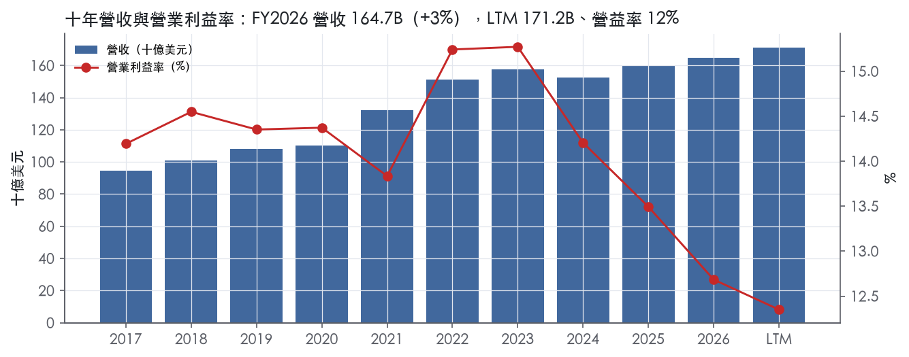
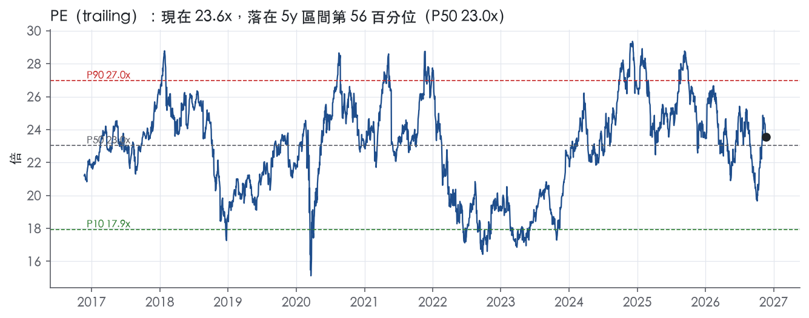
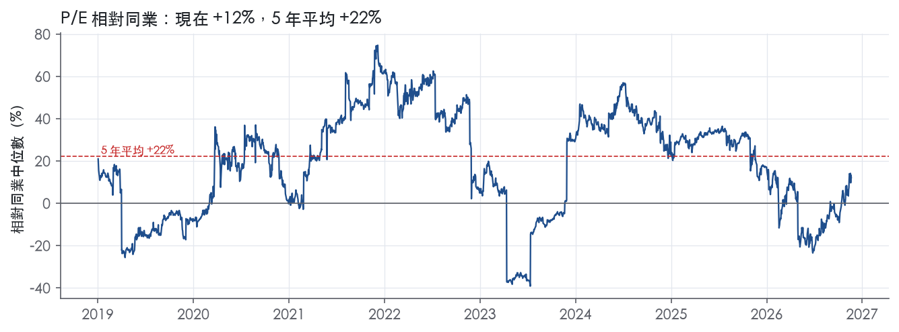
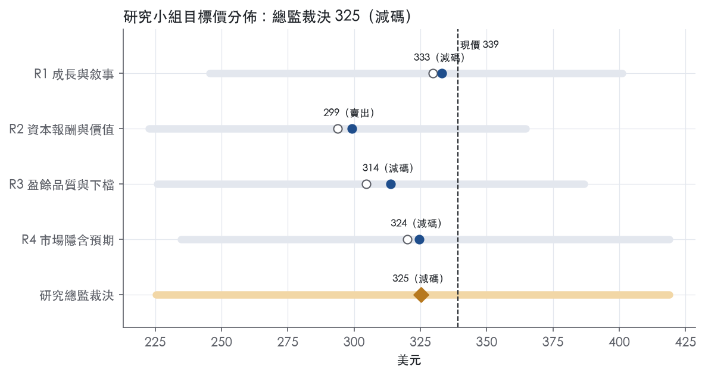
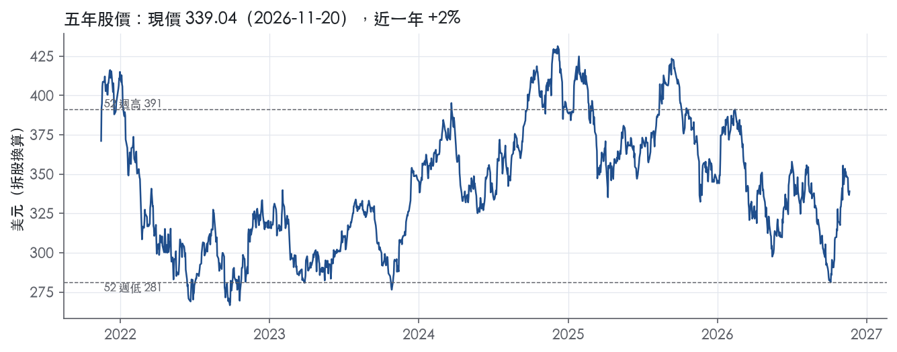

評等總表 › 非必需消費 › HD
併購退潮EPS低增，倍數略收斂，偏空｜評等 減碼｜目標價 325
| 報告日 | 評等 | 目標價 | 當時股價 | 超額報酬 |
|---|---|---|---|---|
| 2026-11-20 | 減碼 | 325 | 339 | -11.4% |
| 2026-10-09 | 中立 | 298 | 291 | -4.2% |
| 快評 | 動作 | 結論 |
|---|---|---|
| 2026-11-17 | 維持 | 淨利略高於預測靠利息，維持中立 |
| 評等 | 減碼 |
| 12 個月目標價 | 325 美元 |
| 現價 | 339.04 美元（2026-11-20） |
| 預期報酬 | 股價 -4.1%＋股息 2.7%＝總報酬 -1.4%；同業籃門檻 10.0%，超額 -11.4% |
| 估值方法 | P/E 21.5x，套在第 5–8 季的EPS（也就是一年後的未來四季） |
| 三情境 | 熊 225／基準 332／牛 419 |
| 研究流程 | 四位研究員兩輪辯論＋研究總監裁決 |
| 資料來源 | SEC EDGAR XBRL、Tiingo、FRED（全免費） |
併購退潮EPS低增，倍數略收斂，偏空（研究總監裁決，四位研究員兩輪辯論後）
評等 減碼｜12 個月目標價 325 美元（總監三情境機率加權 331 與研究員中位數 319 各半）｜現價 339.04（2026-11-20）
預期報酬：股價 -4.1%＋股息 2.7%＝總報酬 -1.4%。同業籃門檻 10.0%，超額 -11.4%。
估值方法：P/E 21.5x，套在第 5–8 季的EPS（也就是一年後的未來四季）。三情境：熊 225（18%）／基準 332（61%）／牛 419（21%）。
什麼會讓研究總監改變看法：fiscal 2027 GAAP EPS 成長指引中值高於 5% 且宣布恢復回購，倍數回到市場持平 22.7x、轉中性；FY2027Q4 可比轉負或毛利率跌破 33.0% 指引，倍數退到前瞻帶 P25 18.8x。
| 過去四季（實際，FY2027Q3） | 未來四季 | 第 5–8 季 | 第 9–12 季 | |
|---|---|---|---|---|
| 營收（B） | 171.2B | 177.2B | 184.3B | 192.6B |
| 營收成長 | 3.0% | 3.5% | 4.0% | 4.5% |
| 營業利益率 | 12.4% | 12.3% | 12.4% | 12.5% |
| EPS（美元） | 14.39 | 14.75 | 15.45 | 16.34 |
| EPS 成長 | -1.9% | 2.5% | 4.7% | 5.7% |
| 每股股息（美元） | 9.29 | 9.29 | 9.29 | 9.29 |
| P/E（現價） | 23.6x | 23.0x | 21.9x | 20.8x |
| 股息殖利率（現價） | 2.7% | 2.7% | 2.7% | 2.7% |
過去四季為申報數字；預測為研究總監的假設、程式計算。倍數與殖利率都用現價計算，用來看現價對應各期獲利的高低。
| 項目 | 上次（2026-10-12） | 這次（2026-11-21） | 變動 |
|---|---|---|---|
| 評等 | 中立 | 減碼 | 變動 |
| 機率加權目標價（美元） | 298 | 325 | +8.9% |
| 超額報酬 | -4.2% | -11.4% | -7.2 pp |
| 目標倍數 | 20.1x | 21.5x | — |
| 未來四季營收成長 | 2.8% | 3.5% | +0.7 pp |
| 未來四季營益率 | 12.5% | 12.3% | -0.2 pp |
| 未來四季 EPS（美元） | 14.63 | 14.75 | +0.8% |
| 熊／基準／牛機率 | 24／56／20 | 18／61／21 | — |
程式計算；「未來四季」各自從當次報告的資料起點算。研究總監逐點說明見第八章「與上次報告比較」。
| 情境 | 機率（歷史） | 故事 | 未來四季營收成長 | 第 5–8 季營益率 | 倍數 | 目標價 | 股價漲跌 |
|---|---|---|---|---|---|---|---|
| 熊 | 18%（16%） | 本行下行路徑（失業率 5.1、Baa 利差 2.30、WTI 95）可比轉負、量縮（風險表第 2 條），SRS/GMS 營建週期放大與槓桿壓縮彈性（第 1 條），利潤率比照 FY2024 類比下滑，倍數落到前瞻帶 P10 | -1.0% | 11.3% | 17.7x | 225 | -33.5% |
| 基準 | 61%（63%） | GMS 併表滿年後總成長回到 3.5–4%、可比 2% 上下，利潤率持平後緩升、無回購，fiscal 2027 指引確認 EPS 低個位數成長後 NTM 倍數由 22.7x 收斂到 21.5x | 3.5% | 12.4% | 21.5x | 332 | -2.0% |
| 牛 | 21%（21%） | 本行上行路徑（10 年債 4.60、GDP 2.8、WTI 72）成屋週轉回升，可比 3% 以上、客流轉正，Pro 與 SRS 帶出費用槓桿，倍數回到前瞻帶 P75 | 5.5% | 13.2% | 24.0x | 419 | 23.5% |
目標價由程式依研究總監的驅動與倍數計算；機率由研究總監給定。括號內是歷史頻率：把這檔股票過去十年 12 個月報酬的波動形狀，置中在基準情境，結果落在各情境附近的比例。

四位研究員用不同方法各自估值，回應研究總監的質疑後交出第二輪，最後由總監逐點裁決。各研究員的主張見第七章，裁決理由見第八章，完整論證見《研究底稿》。
| 立場（一輪→二輪） | 加權目標價（一輪→二輪） | 評等（一輪→二輪） | 第二輪倍數 | 熊～牛目標價 | |
|---|---|---|---|---|---|
| R1 成長與敘事 | 看空→看空 | 330→333 | 減碼→減碼 | 23.0x | 245～401 |
| R2 資本報酬與價值 | 看空→看空 | 294→299 | 賣出→賣出 | 20.2x | 223～365 |
| R3 盈餘品質與下檔 | 看空→看空 | 304→314 | 賣出→減碼 | 21.0x | 226～387 |
| R4 市場隱含預期 | 看空→看空 | 320→324 | 減碼→減碼 | 21.0x | 235～419 |
| 研究總監裁決 | 看空 | 325 | 減碼 | 21.5x | 225～419 |
目標價由程式依各自的驅動與倍數計算；評等＝機率加權總報酬 − 同業籃門檻。
Home Depot 是以淨銷售額計算全球最大的家居改善零售商，在美國（含波多黎各、美屬維京群島、關島）、加拿大與墨西哥經營，提供建材、園藝、裝飾及設施 MRO 產品，並提供居家裝修安裝服務與工具設備租賃¹。公司服務兩類主要客群——消費者（含 DIY 與 DIFM）與專業客群（Pros），後者涵蓋裝修商、總承包商、建商、物業管理、電工、水管工、屋頂工等¹。這是一家以零售門店為核心、近年透過併購強力擴張 Pro 專業經銷網絡的雙軌公司。
公司將美國、加拿大、墨西哥三個地理營運單位合併為單一可報導分部（Primary segment），10-K 未揭露各地理單位個別營收占比¹。FY2024 收購 SRS（專業屋頂、景觀、泳池建材經銷商），FY2025 SRS 再收購 GMS（石膏板、天花板、鋼構等建材經銷商），截至 FY2025 底 SRS（含 GMS）在美加合計營運逾 1,250 個據點，並組織成屋頂與建材、室內與建築產品、景觀、泳池四條產品線，每條產品線皆為營運分部但均非可報導分部¹。單店平均約 10.4 萬平方英尺室內賣場加約 2.4 萬平方英尺戶外園藝區，單店年度庫存約 3 萬至 4 萬個品項，涵蓋家電、衛浴、建材、電器、地板、五金、室內花園、廚具窗簾、燈具、木料、門窗框、戶外花園、油漆、水管、電動工具、收納等部門¹。FY2026 公司資本支出占營收比約 2.2%（is.capex/revenue.FY2026，資料包推導），FY2025 資本支出投入 3.7B 美元，用於新店興建、既有店維護、互聯體驗與 Pro 服務投資¹。SRS/GMS 併購目標是加速成為多品類建材經銷龍頭¹。零售主業仍是營收主體，SRS/GMS 專業經銷業務規模貢獻多少，10-K 未單獨揭露具體營收金額。
客戶結構分 DIY、Pro、DIFM 三類，DIFM 客戶介於前兩者之間，透過地板、熱水器、衛浴、車庫門、楥惃、檯面、棚屋、暖爐空調、窗戶等類別購買安裝服務，可在店內、線上或到府諮詢完成¹。通路上公司強調「互聯體驗」，線上下單約 50% 的美國訂單透過門店完成履約（BOSS、BOPIS、BODFS、BORIS 等模式），SRS 分支據點則可直送客戶工地¹。截至 FY2025 底公司營運 2,359 家門店，截至 FY2026Q3（2026-11-01）門店數增至 2,372 家，SRS 據點逾 1,320 個，覆蓋美國 50 州、哥倫比亞特區、波多黎各、美屬維京群島、關島、加拿大 10 省及墨西哥，員工逾 47 萬人²。公司未在 10-K 揭露美國／加拿大／墨西哥各自營收占比，三地合併為單一報導分部。
FY2026Q1（截至 2025-05-04）營收 39.86B 美元，年增 9.4%，EPS 3.45。FY2026Q2（截至 2025-08-03）營收 45.28B 美元，年增 4.9%，EPS 4.58。FY2026Q3（截至 2025-11-02）營收 41.35B 美元，年增 2.8%，EPS 3.62。FY2027Q2（2026-08-18 公告，對應期末 2026-08-02）營收 47,861M 美元，年增 5.7%，可比銷售成長 1.7%，淨利 4,766M 美元、每股 4.79 美元，調整後每股 4.92 美元，公司重申 FY2026 全年指引：總銷售成長約 2.5%–4.5%、可比銷售持平至 2.0%、毛利率約 33.1%、營益率 12.4%–12.6%³。最新一季 FY2027Q3（2026-11-17 公告，對應期末 2026-11-01）營收 43,398M 美元，較上年同期 41,352M 美元增加 2,046M 美元、年增 4.9%，可比銷售成長 2.2%，美國可比銷售成長 2.2%，淨利 3,713M 美元、每股 3.72 美元，調整後每股 3.86 美元，CEO McPhail 表示本季表現優於預期、受惠於顧客參與度與執行力提升市占²。公司同時上修 FY2026 全年指引至：總銷售成長約 4.5%、可比銷售成長約 1.4%、毛利率約 33.0%、營益率約 12.4%、調整後營益率約 12.8%、有效稅率約 24.6%、淨利息支出約 2.2B 美元、每股盈餘自 FY2025 的 14.23 美元成長約 1.5%，調整後每股盈餘自 14.69 美元成長約 2.0%，資本支出約占總銷售 2.5%²。整體看，近四季營收年增率從 9.4% 逐步放緩至 2.8%–4.9% 區間，但可比銷售轉正且加速，顯示同店動能回穩、營益率維持 12%–14.5% 區間波動。
公司將策略定義為三大支柱：鞏固核心與文化、讓員工提供最佳顧客體驗；提供無摩擦的互聯顧客體驗，不論顧客選擇實體或數位渠道；以差異化價值主張與能力生態系贏得 Pro 客群¹。資本配置原則依序為：優先再投資本業以超越市場成長、其次支付季度股息、再其次透過股票回購將多餘現金還給股東¹。FY2025 公司以現金股息形式返還股東 9.2B 美元，並將季度現金股息自每股 2.25 美元上調 2.2% 至 2.30 美元¹。公司表示 SRS 收購 GMS 是為加速成為多品類建材經銷龍頭的願景，並持續投資供應鏈（自動化快速補貨中心、FDC Relay 新配送模式）、數位工具（Magic Apron、Blueprint Takeoffs Tool）與 Pro 專屬能力（Pro Xtra 忠誠計畫、Pro Trade Credit）作為成長引擎¹。公司並規劃在 FY2023 啟動的五年新店計畫中於 FY2027 完成約 80 家新店，之後轉為每年新開 15–20 家¹。整體而言，Home Depot 的成長引擎已從傳統零售同店成長轉向「零售＋Pro 專業經銷併購」雙軸驅動，SRS/GMS 整合進度與併購商譽攤銷將是未來利潤率的主要變數。公司近兩季可比銷售轉正、指引上修，顯示美國住宅改善需求邊際回暖，但營收成長的主要增量仍來自 SRS/GMS 併購貢獻而非有機同店成長。長期而言，淨負債持續攀升（FY2026 達 54.38B 美元）反映併購槓桿上升，是觀察現金流分配彈性的關鍵指標。

Home Depot 的護城河評為「寬」，趨勢「變窄」。成本優勢與品牌資產讓我們有把握未來 10 年以上 ROIC 仍高於資本成本。ROIC 已連續四年下滑，最新值只剩十年高點的一半左右，所以趨勢不能給「穩定」。
最主要的來源是成本優勢，其次是無形資產；轉換成本存在但偏弱。
成本優勢（規模、供應鏈、門店地產）
無形資產（品牌、商標）
轉換成本（僅限 Pro 客群，偏弱）
網路效應與效率規模沒有足夠證據，不列入。
數字大致支持寬護城河，但 ROIC 的方向與評級有衝突，必須正面處理。
支持的部分
衝突的部分
為什麼仍維持「寬」
ROE 一欄（十年平均 -1458.1%、標準差 9797.3%）是股東權益接近零或為負造成的失真，不具分析意義。
最大的侵蝕來源是線上與 AI 帶來的價格透明化，其次是併購稀釋報酬率。
價格透明化
併購整合
槓桿上升
觀察指標
目標倍數相對同業應給予溢價，因為十年 ROIC 平均超額報酬 31.5%、利潤率標準差極小，護城河的持久性高於一般零售商。但溢價不應高於歷史中位數：本益比目前 23.6x，與 5 年中位數 23.0x相當，ROIC 仍在下行，估值研究員應以歷史中位數作為上限，而不是用 5 年 P90 的 27.0x作為目標。溢價的持續期間應假設逐步收斂，除非 SRS/GMS 整合後 ROIC 止跌回升。
| 指標 | 最新 | 十年平均 | 標準差 | 最低 | 最高 |
|---|---|---|---|---|---|
| ROIC | 25.3% | 41.6% | 7.9% | 25.3% | 50.7% |
| 毛利率 | 33.3% | 33.8% | 0.4% | 33.3% | 34.3% |
| 營業利益率 | 12.7% | 14.2% | 0.7% | 12.7% | 15.3% |
| FCF 利潤率 | 7.7% | 9.7% | 1.5% | 7.3% | 12.4% |
| ROE | 145.5% | -1458.1% | 9797.3% | -25529.9% | 14061.2% |
程式計算。資本成本代理值（10 年債＋5%）：10.0%；ROIC 平均減資本成本：31.5%；ROIC 有資料的 9 年中，高於資本成本 9 年。
LTM 營業現金流／淨利 1.31x、三年平均 1.30x、十年平均 1.22x，三個期間都在綠燈區，盈餘長期有現金支撐。 FCF／淨利 LTM 1.05x、三年平均 1.06x、十年平均 1.01x，同樣維持在綠燈門檻之上，資本支出沒有把盈餘的現金品質吃掉。 應計比率 LTM -4.1%、三年平均 -5.3%、十年平均 -4.4%，全部為負值，代表淨利長期低於或等於現金流而非靠應計堆出來，這是正向訊號。 拉長到年度數字看，FY2026 CFO 16.32B、淨利 14.16B，CFO 仍覆蓋淨利，但 FCF 12.65B 對淨利的比值低於前幾年（資料包年度表）。 不過最近四季 CFO 與 FCF 已明顯回升，FY2027Q1 單季 FCF 就有 5.19B（資料包最近八季表），帶動 LTM 比值重新站上 1.0x 以上。 整體看，現金轉換是這份財報裡最乾淨的一塊，沒有需要打折的理由。
第三季 GAAP 稀釋每股盈餘 3.72 美元，調整後（Adjusted）稀釋每股盈餘為 3.86 美元²。 FY2026 財測把 GAAP 稀釋 EPS 設在由 FY2025 的 14.23 美元成長約 1.5%，調整後 EPS 則是由 14.69 美元成長約 2.0%²。 新聞稿本身只給出調整後營益率「約 12.8%」對比 GAAP 營業利益率「約 12.4%」的缺口，並說明調整項目的逐項金額要「參照本次新聞稿末段的非 GAAP 對照表」，但本次取得的新聞稿節錄沒有附上該對照表的明細金額²。 損益表顯示折舊攤銷費用第三季為 849M（去年同期 826M）、前九個月為 2,542M（去年同期 2,428M），年增幅度高於營收年增，與 SRS、GMS 併購後新增無形資產攤銷的方向一致²。 由於計分表顯示 SBC／營收 LTM、三年、十年都維持在 0.3%，股權薩勞不是推高調整後盈餘的主要項目。 在缺乏逐項金額的情況下，我傾向把 GAAP 與調整後 EPS 之間的缺口主要歸因於併購帶來的無形資產攤銷，這類攤銷是真實的經濟成本（代表買下來的客戶關係、品牌等資產在消耗），估值時不應完全加回。
淨負債為 50.52B，對應淨負債／EBITDA LTM 2.05x，落在黃燈區。 資本配置原則明確排序：先投資本業、其次配發股利、最後才用剩餘現金買回股票⁴。 FY2025 資本支出 3.7B，股利發放 9.2B，季配息由每股 2.25 美元上調至 2.30 美元，增幅 2.2%⁴。 計分表顯示（股利＋回購）／淨利從十年平均 102.8% 降到 LTM 64.6%，三年平均則是 79.1%，方向與「先還併購債、回購讓位」一致。 資產負債表上現金僅 1,968M，對照短期債務 5,609M 加上一年內到期長期債務 3,945M，帳上現金明顯單薄，但這是 Home Depot 長期的低現金政策，不是新惡化（8-K 資產負債表）²。
淨負債／EBITDA 黃（LTM 2.05x，三年 1.98x，十年 1.63x）：真實槓桿上升，資料包年度表顯示淨負債從 FY2023 的 40.44B 一路升到 FY2026 的 54.38B，時間點對應 10-K 揭露的 FY2024 收購 SRS、FY2025 由 SRS 完成收購 GMS（資料包年度表）⁴。這不是帳面灰色地帶，是用舉債做併購的結果，利息保障倍數 LTM 仍有 8.93x，顯示付息能力還夠，但槓桿已經是會限制估值倍數的真實因子。
稀釋股數年變動 黃（LTM +0.1%，三年 -1.0%，十年 -2.4%）：股數不再像過去持續淨減少，但 SBC／營收維持 0.3% 低水位，排除了股權薪酬造成稀釋的可能。真正原因是資本配置排序把償債與整合 SRS/GMS 放在回購之前，回購暫緩⁴，這是策略選擇造成的假警報，不是盈餘品質問題。
應收帳款成長－營收成長 +10.9pp 黃（FY2026）：這個差距出現在 GMS 併購完成當年，併入的應收帳款是一次性的資產負債表併表效果，不是既有業務收款變慢（資料包年度表、10-K Item 1 揭露 GMS 收購時間點）⁴。建議下一年度觀察此差距是否收斂，若收斂則確認是一次性。
存貨成長－營收成長 +6.8pp 黃（FY2026）：同樣的邏輯，SRS 併入 GMS 後新增的建材／屋頂材料庫存基礎墊高了存貨總額，與營收有機成長脫鉤，屬於併購帳面效果而非去化變慢（10-K Item 1 揭露併購標的業態為材料經銷商）⁴。
其餘項目（CFO/NI、FCF/NI、應計比率、SBC/營收、利息保障、股東回饋）全部落在綠燈，沒有需要額外解釋的異常。
盈餘品質本身乾淨，現金轉換持續大於 1x，不需要對 GAAP 淨利做額外品質折讓。 調整後 EPS 的缺口主要來自併購攤銷，估值錨點建議用 GAAP 或 EBITA（已扣攤銷）口徑，而非直接採信 Adjusted EPS。 淨負債／EBITDA 2.05x 的黃燈是真實且持續的槓桿上升，應該反映在 EV/EBITDA 倍數的保守端，而非給予歷史滿分倍數。
| 項目 | LTM | 近三年 | 十年 | 燈號 | 規則 |
|---|---|---|---|---|---|
| 營業現金流／淨利 | 1.31x | 1.30x | 1.22x | 綠 | ≥1.00x 綠、<0.80x 紅 |
| 自由現金流／淨利 | 1.05x | 1.06x | 1.01x | 綠 | ≥0.90x 綠、<0.60x 紅 |
| 應計比率（(淨利−CFO)／平均總資產） | -4.1% | -5.3% | -4.4% | 綠 | ≤0.0% 綠、>5.0% 紅 |
| SBC／營收 | 0.3% | 0.3% | 0.3% | 綠 | ≤3.0% 綠、>8.0% 紅 |
| 淨負債／EBITDA | 2.05x | 1.98x | 1.63x | 黃 | ≤1.50x 綠、>3.00x 紅 |
| 利息保障倍數（營業利益／利息） | 8.93x | 9.70x | 13.0x | 綠 | ≥8.00x 綠、<3.00x 紅 |
| 稀釋股數年變動 | 0.1% | -1.0% | -2.4% | 黃 | ≤0.0% 綠、>3.0% 紅 |
| （股利＋回購）／淨利 | 64.6% | 79.1% | 102.8% | 綠 | ≥50.0% 綠、<0.0% 紅 |
| 應收帳款成長 − 營收成長（FY2026） | +10.9pp | — | — | 黃 | ≤5pp 綠、>15pp 紅 |
| 存貨成長 − 營收成長（FY2026） | +6.8pp | — | — | 黃 | ≤5pp 綠、>15pp 紅 |
程式計算；燈號以 LTM（無則近三年平均）判定。
| 風險 | 觸發指標（看什麼數字、在哪裡看） | 對 EPS 的影響方向與粗略幅度 | 未來 12 個月發生機率（高／中／低） | 出處 |
|---|---|---|---|---|
| 1. 併購整合失敗或未達預期效益（SRS/GMS） | 季度淨負債（bs.net_debt）、商譽減值公告、SRS/GMS 可比銷售揭露 | 負向，大；若發生減值可直接衝擊 GAAP EPS，資本支出/利息負擔已墊高（淨利息支出指引約 2.2B） | 中 | ⁵／² |
| 2. 同店銷售動能不如預期、住宅改善需求疲弱 | 季度 comparable sales（10-Q/8-K）、FY2026 可比銷售指引 1.4% 達成與否 | 負向，中；可比銷售每偏離指引 1pt，營益率連動下修（FY2026 營益率指引 12.4%） | 中 | 8-K 財報新聞稿（2026-11-17） |
| 3. 技術基礎設施／網路安全事故中斷營運或外洩資料 | 公司是否發布資安事件 8-K、客服/物流中斷公告 | 負向，中至大（視事件規模，10-K 未給具體金額）；可能造成直接補救成本與訴訟 | 低 | 10-K 年報 FY2026 Item 1A（風險因素） |
| 4. 供應鏈中斷（關稅、貿易政策、港口/運輸）推升成本或缺貨 | 毛利率（gross margin，目前指引約 33.0%）、關稅/貿易政策公告 | 負向，中；毛利率每下滑 0.1pt 對 EPS 有直接拖累（量化底稿：FY2026 毛利率 33.3%→指引 33.0%已下修） | 中 | ⁵／² |
| 5. 利率與信用環境影響消費者/Pro 信貸需求與借款成本 | ust10y／fed_funds（mac.*latest）、淨利息支出實際值 vs 指引 2.2B | 負向，中；高利率環境抑制房屋翻修融資需求，也墊高公司自身債務成本 | 中 | （總經數字取自資料包 mac.*latest） |
1. 併購整合風險最致命，因為它同時打到成長敘事和資產負債表。10-K 明確點出「我們可能無法有效整合，也可能無法實現預期的協同效益」，整合失敗可能導致商譽減損、重組費用⁵。公司淨負債已從 FY2024 的 40.35B 攀升至 FY2026 的 54.38B（dv.net_debt），主要反映 SRS 收購 GMS 的槓桿使用【判，數字取自資料包】。觀測方式：每季看淨負債變化、SRS/GMS 相關商譽科目是否有減值測試揭露。若 SRS/GMS 貢獻的收購式成長放緩，而公司仍背負相應利息負擔，EPS 的槓桿效應會是雙向放大（好時放大好、壞時放大壞）。
2. 同店銷售（comparable sales）是最直接可監測的需求指標。FY2027Q3 可比銷售成長 2.2%，優於公司預期，公司上修 FY2026 全年可比銷售指引至約 1.4%²。10-K 風險章指出，公司「可能無法及時識別或有效回應顧客需求、期望或趨勢」，進而影響需求與市占⁵。觀測方式：每季 8-K 揭露的可比銷售數字，以及是否偏離公司自訂指引。目前趨勢是轉正加速，但這是「尚未發生」的風險，一旦住宅市場轉弱（房貸利率、成屋銷售走弱），這條會迅速反轉成拖累。
3. 技術與資安風險屬於尾部風險，機率低但一旦發生衝擊大。10-K 用大篇幅描述技術基礎設施故障、網路攻擊、第三方服務商風險，包括國家級行為者的報復性攻擊、AI 使得威脅門檻降低等⁵。公司承認「過去曾經歷過」此類事件但未揭露具體財務損失金額，因此本報告不自行估算百分比。觀測方式：關注是否有新的資安事件 8-K 揭露，以及該事件是否觸及 Item 1C Cybersecurity 揭露義務。
4. 供應鏈與關稅風險直接作用在毛利率這條最敏感的線上。10-K 列舉港口壅塞、關稅、貿易政策變化、運輸能力限制等多重供應鏈干擾來源⁵。公司 FY2026 指引毛利率約 33.0%，相較 FY2025 的 33.4%已下修，暗示關稅與成本壓力已部分反映在最新指引中²／【判，比較用資料包數字】。觀測方式：每季毛利率實際值 vs. 指引、政府關稅公告時間點。
5. 利率環境是唯一可用總經數字直接監測、但不算「不可監測的總體轉弱」的風險。公司自身淨利息支出指引約 2.2B 美元（FY2026），資料包顯示 10 年期公債利率 5.04%、Fed Funds 3.88%，處於近年相對高位，對公司自身舉債成本與消費者房貸/消費信貸需求都是雙重壓力。10-K 列出「信用市場狀況，包括房貸、房屋淨值貸款及消費與交易信貸」為前瞻聲明風險因子之一⁵。觀測方式：每季淨利息支出實際值對比 2.2B 指引、FRED 公債利率走勢。
A. 稀釋股數持續下降但自由現金流覆蓋率收窄，股票回購空間可能受壓縮。資料包顯示 FY2026 FCF 12.65B、CFO 16.32B，均低於 FY2025 水準（16.32B／19.81B），而淨負債持續攀升至 54.38B；若 FCF 進一步惡化，公司資本配置優先順序（再投資→股息→回購）可能被迫犧牲回購，削弱 EPS 成長的財務工程貢獻。
B. 新任 CEO／COO 交接期的執行風險。新聞稿中 McPhail 以「incoming chief executive officer」、Campbell 以「incoming president and chief operating officer」身分發言，顯示公司正處於高層交接期²，10-K 未將管理層交接列為獨立風險因子，但重大戰略決策（如 SRS/GMS 整合節奏、資本配置優先序）若在交接期出現延誤或方向調整，可能影響市場對公司執行力的信心與估值倍數。
現價 339.04 對應 trailing（過去四季）P/E 23.6x、EV/EBITDA 15.8x、EV/EBITA 17.8x、EV/Sales 2.3x、FCF 殖利率 4.5%。主要估值倍數 P/E 現在 23.6x，落在5 年區間第 56 百分位（P10／P50／P90 = 17.9x／23.0x／27.0x）。

把程式的機械基準預測放到現價下，市場付的前瞻倍數是：P/E（未來四季） 22.7x、P/E（第 5–8 季） 21.5x。反推 DCF 顯示市價隱含未來五年營收年成長 9.3%（WACC 9.0%、終值成長 3.0%、FCF 利潤率 9.3%，SBC 不加回）。
| 倍數 | 現在 | 5 年 P10 | 5 年 P50 | 5 年 P90 | 現在分位 | 全期 P50 |
|---|---|---|---|---|---|---|
| P/E | 23.6x | 17.9x | 23.0x | 27.0x | 55.7% | 23.3x |
| EV/EBITDA | 15.8x | 12.9x | 15.7x | 18.3x | 50.3% | 15.6x |
| EV/EBITA | 17.8x | 14.5x | 17.9x | 20.7x | 47.0% | 17.7x |
| EV/EBIT | 18.4x | 14.3x | 18.0x | 20.9x | 55.5% | 17.6x |
| EV/Sales | 2.3x | 2.1x | 2.4x | 2.9x | 24.0% | 2.4x |
| P/S | 2.0x | 1.9x | 2.1x | 2.6x | 23.0% | 2.2x |
| P/FCF | 22.4x | 19.3x | 24.3x | 30.0x | 30.9% | 22.7x |
trailing 倍數（股價 ÷ 過去四季）；分位以每個交易日計算。
同業籃：LOW, BLDR, FND, JCTC（SIC 5211 同業 4 家中，CY2025 營收最接近的 4 家）。評等門檻 10.0%：同業「倍數不變下持有一年」的隱含報酬中位數（＝ FCF 殖利率 ×(1＋g)＋g，g 為 5 年營收年複合成長並夾在 −2%～8%），每家夾在 0～15%、P/E 低於 5 倍視為資料可疑而排除，中位數再限制在 10 年債到 10 年債＋5% 之間（同業原始中位數 13.8%）。
| 代號 | 市值 | 5 年營收 CAGR | 營益率 | ROIC | P/E | 5 年 P/E 中位數 | EV/EBITDA | P/FCF | 隱含報酬 |
|---|---|---|---|---|---|---|---|---|---|
| HD | 338.4B | 4.5% | 12.4% | 25.3% | 23.6x | 23.0x | 15.8x | 22.4x | 9.2% |
| LOW | 123.9B | -0.8% | 11.4% | 32.3% | 18.7x | 19.3x | 12.5x | 17.7x | 4.9% |
| BLDR | 5.9B | 12.2% | 2.1% | 8.1% | 148.1x | 14.3x | 11.6x | 23.6x | 12.6% |
| FND | 4.9B | 14.1% | 6.5% | 9.3% | 21.0x | 36.0x | 8.6x | 14.4x | 15.5% |
| JCTC | 0.0B | -8.6% | -16.5% | -36.6% | — | — | — | 2.5x | 37.3% |
| 同業中位數 | 5.7% | 4.3% | 8.7% | 21.0x | 19.3x | 11.6x | 16.1x | 10.0% |
全部 trailing，程式以各公司 SEC XBRL 與 Tiingo 行情計算；第一列為本檔。
P/E 相對同業中位數：現在 12.2%，過去 1 年平均 -1.0%、3 年 22.7%、5 年 22.4%；EV/EBITDA 相對同業中位數：現在 35.8%，過去 1 年平均 34.0%、3 年 29.5%、5 年 22.2%。

事後實現前瞻倍數帶（P/E，2018-12-18..2025-12-16）：P10／P50／P90 = 17.7x／20.2x／26.5x。它是每個交易日的股價除以之後四季實際實現的指標；一年後，今天的第 5–8 季正是那時的未來四季，所以這條帶是 12 個月目標價的同口徑倍數。因為用的是事後實際而非當時預期，過去成長超乎預期的公司這條帶會偏低。
程式的機械基準（成長率從過去四季年增率三年收斂到 6%、利潤率持平）用 事後實現前瞻 P/E P50 估值得到 319（-5.8%），市場現行前瞻倍數（現價 ÷ 基準 未來四季指標）一年後持平，套在基準 第 5–8 季指標得到 357。這兩個數字只是參考點，不是本報告的目標價；研究員對這個定價的回應在第七章。
下表是每位研究員第一輪（各自獨立）與第二輪（回應研究總監的質疑後）的結果。目標價全由程式依各自的假設計算。
| 立場（一輪→二輪） | 加權目標價（一輪→二輪） | 評等（一輪→二輪） | 第二輪倍數 | 熊～牛目標價 | |
|---|---|---|---|---|---|
| R1 成長與敘事 | 看空→看空 | 330→333 | 減碼→減碼 | 23.0x | 245～401 |
| R2 資本報酬與價值 | 看空→看空 | 294→299 | 賣出→賣出 | 20.2x | 223～365 |
| R3 盈餘品質與下檔 | 看空→看空 | 304→314 | 賣出→減碼 | 21.0x | 226～387 |
| R4 市場隱含預期 | 看空→看空 | 320→324 | 減碼→減碼 | 21.0x | 235～419 |
| 研究總監裁決 | 看空 | 325 | 減碼 | 21.5x | 225～419 |
目標價由程式依各自的驅動與倍數計算；評等＝機率加權總報酬 − 同業籃門檻。
分歧度：第一輪 加權目標價 294～330（區間＝現價的 11%）· 倍數 19.5～23x · 立場 看空×4（方向一致）；第二輪 加權目標價 299～333（區間＝現價的 10%）· 倍數 20.2～23x · 立場 看空×4（方向一致）。

| 研究員 | 第二輪主張 | 堅持的理由 |
|---|---|---|
| R1 成長與敘事 | 看空，給 23.0x，錨在自家五年 P/E 中位數。 | 熊情境不放軟：倍數 19x，接近同業五年中位數 19.3x。 |
| R2 資本報酬與價值 | 看空，給 20.2x，錨在事後實現的前瞻 P/E 中位數。 | 基準情境不給回購，熊情境機率 26% 高於牛。 |
| R3 盈餘品質與下檔 | 看空，給 21.0x；槓桿 2.05x，EPS 四年沒有成長。 | 利潤率不擴張：毛利率指引下修，交易筆數仍是負的。 |
| R4 市場隱含預期 | 看空，給 21.0x；市場在為成長收斂到 6% 付溢價。 | HD 對 LOW 的溢價高於五年常態，這個溢價會收斂。 |
每位研究員的逐條回應與完整論證見《研究底稿》（HD_研究底稿_2026-11-21.docx）。
| 分歧點 | R1 成長 | R2 價值 | R3 品質 | R4 預期 | 什麼資料會分出勝負 |
|---|---|---|---|---|---|
| 1. 目標倍數與錨（multiple） | 23.0x trailing 5y P50 套 ntm：市場穿越盈餘低谷仍付中位數 | 20.2x 前瞻帶 P50 套 q5_q8：回購停擺、槓桿，與帶的低偏誤相抵 | 21.0x：P50 略上；槓桿 2.05x、EPS 四年未成長 | 21.0x：P50 略上；HD 對 LOW 溢價高於 5 年常態將收斂 | 2027-03-06 前 fiscal 2027 EPS 指引與回購宣告；公告後市場 NTM P/E 守不守 22.7x |
| 2. NTM 營收成長（rev_growth_y1） | 3.5%：全年指引 4.5% 低於九個月 5.2% | 3.0%：GMS 於 fiscal 2025 收購，NTM 最多一季併購貢獻 | 3.0%：交易筆數仍負 | 3.5%：同 R1，加九個月可比客流 −1.0% | FY2027Q4、FY2028Q1 營收年增對可比的缺口 |
| 3. Q5–Q12 成長（rev_growth_y2/y3） | 4.0／4.5 | 3.5／4.0 | 3.8／4.5 | 4.0／4.5 | fiscal 2027 可比指引中值；新店節奏 15–20 家 |
| 4. 營益率（op_margin_y1/y2） | 12.1／12.4：退稅退場、毛利率下修 | 12.3／12.3：沿基準 | 12.2／12.2：退稅淨效果偏負但變小 | 12.4／12.4：等於公司 GAAP 指引 | fiscal 2027 GAAP 營益率指引中值對 12.3%；Q4 毛利率對 33.0% |
| 5. 情境機率（牛／基準／熊） | 28／51／21 | 24／50／26（熊＞牛） | 22／58／20 | 20／59／21 | 歷史落點；季末淨負債是否續降；風險表第 1、2 條是否觸發 |
分歧一：目標倍數 → own，21.5x eps@q5_q8。 R1 的 23.0x 是 trailing 5 年中位數，但那個中位數是在稀釋股數由 1.23B降到 0.99B、ROIC 從 50.7%起算的年代付出的；現在股數年變動 +0.2%、ROIC 25.3%、回購被排在資本配置最後¹。對同一條 EPS 付同樣的 trailing 倍數，等於假設市場不在意成長引擎換了，R2 這點成立；R1 也沒有用劇本主尺 q5_q8。R2 的 20.2x 則是一條他自己承認偏低的帶（2019–21 實現值高於預期）的中位數，而市場在 EPS 由 16.69 跌到 14.23的 FY2024–26 期間仍付 3 年 P50 24.3x——市場穿越低谷的證據是真的；他的槓桿理由也被淨負債回落（54.38B → 50.52B）削弱。R3／R4 的 21.0x 只比 P50 高 0.8x：R4 的 LOW 對照方向可疑，LOW 的 5 年營收 CAGR −0.8%、營益率 11.4%（同業表）退化比 HD 更多，溢價擴大未必會收斂；R3 的「EPS 四年未成長」是回頭看的事實，近一年報酬 2.0% 顯示市場已消化。我取 21.5x，介於前瞻帶 P50 與市場持平 22.7x 之間。低於 22.7x 的個股理由：fiscal 2026 EPS 只成長約 1.5%²、回購缺席、淨負債／EBITDA 2.05x 高於十年 1.63x，護城河章要求溢價向中位數收斂而非停在上方；不再往下的理由：可比由 0.2% 加速到 2.2%、第三季 SG&A 年增 3.4% 低於營收 4.9%²，營運動能在改善。21.5x 恰等於基準 EPS 下的零報酬倍數，在我較低的 EPS 路徑上代表股價小跌。第二輪沒有研究員再用利率壓倍數，R2 已刪除。
分歧二：NTM 營收成長 → expectations（R4，與 R1 同值），3.5%。 共享的事實：全年指引約 4.5% 低於前九個月 5.2%²，公司自己隱含第四季放緩；GMS 在 fiscal 2025 收購¹，非可比貢獻在 NTM 內退場。R2／R3 的 3.0% 等於假設可比停在全年指引的約 1.4%，但那個 1.4% 含上半年弱季，第三季已是 2.2%，加上約 15 家新店與 SRS 據點由逾 1,250 增到逾 1,320⁶；3.0% 需要可比減速的證據，他們沒有給。本研究部營收預測誤差中位數全部偏低（−0.6% 到 −0.9%），方向修正也指向較高一端。
分歧三：Q5–Q12 成長 → growth（R1），4.0%／4.5%。 向 6% 收斂是機械規則；非疫情、非併購年份的成長在 1.9%–7.2%（–FY2020、FY2023），本行前提 10 年債 4.98 持平、GDP 1.8，沒有住宅週轉回升的順風。新店 15–20 家⁶加可比 2% 上下（假設）得 4.0–4.5%。R2 的 3.5／4.0 要求可比退回 1.5% 並持續兩年，與第三季市占擴大的描述矛盾；R3 的 3.8／4.5 與裁決接近。
分歧四：營益率 → own，12.3%／12.4%／12.5%。 R1／R3 的證據為真：全年指引含一次性 IEEPA 關稅退稅³，第三季毛利率 32.8% 低於去年 33.4%（FY2026Q3），毛利率指引由約 33.1% 下修到 33.0%。但另一邊同樣有數字：第三季 SG&A 年增 3.4% 低於營收 4.9%、營業利益年增 2.4%²，WTI 由 97 降到 88（本行基準路徑）會吃掉一部分「計畫外」成本，GMS 併表滿年後混合拖累退出年增比較（假設）。本研究部營業利益預測系統性偏低（總監 −2.4%、R2 −4.8%、R3 −3.3%、R1 −2.8%），只有 R4 的 −0.8% 最準而他給 12.4%；上季快評也判定「營益率不給修復」已被削弱。NTM 取 12.3%——退稅消失與油價、費用槓桿互抵；不取 R4 的 12.4%，因為那個指引含退稅。y2、y3 各加 10bp，來自 2% 以上可比帶來的費用槓桿（假設）。
分歧五：情境機率 → expectations（R4）的方法：照歷史落點，牛 ≥ 熊。 R2 熊 26% 高於牛 24%，與他自己的歷史對照（28／51／21）順序相反；他的個股理由「淨負債處於十年高點」已被 50.52B 低於 54.38B 否定；風險表第 1、2 條的日期是熊情境的定義，不是它更常發生的證據；本行一年內衰退機率 25% 低於歷史 31%。R1 牛比歷史多 2 個百分點也無個股證據，但幅度小。本研究部 22 份報告全部熊＞牛，而這檔股票的置中分布 P10 −21%／P90 +19% 幾乎對稱，熊情境又比牛情境離基準更遠，順序理當是牛 ≥ 熊。
漂移與總經偏離。 四位第二輪的修正都對應我第一輪轉發的材料（護城河章的分母論、FY2024 類比、8-K 原文），drift_rejections 為空。R3 靠攏比例 60%、倍數剛好落在他人中位數 21.0x，但來源是護城河章把 ROIC 從折價理由中拿掉，屬有證據的修正，接受；R1 正文的「1,500 億美元」對不上任何來源，刪除。四人 macro_deviations 皆為空，接受；最終 macro_deviations 為 []。
與機械基準不同的驅動：
目標倍數 21.5x，套在 eps@q5_q8，前瞻帶配 第 5–8 季。錨：事後實現前瞻 P/E 帶 P50 20.2x（偏低）與市場持平 22.7x之間，即「一年後市場付的 NTM P/E 比現在略低」。對自家歷史：trailing 1／3／5／10 年中位數 23.6x／24.3x／23.0x／23.3x，我判斷 21.5x 配上低個位數成長的 EPS，對應的一年後 trailing 倍數會略低於十年中位數——折價是刻意的，3 年中位數是在盈餘低谷上被墊高的，而回購與 ROIC 這兩具引擎已換檔。對同業：維持對 LOW 18.7x 的溢價，理由是營益率 12.4% 對 11.4%、5 年 CAGR 4.5% 對 −0.8%（同業表）；同業中位數含 BLDR 148.1x 與 JCTC，不用。交叉驗證：基準模型顯示 20.2x 對應 Q5–Q8 EV/EBITDA 13.5x，21.5x 仍在自家 5 年 EV/EBITDA P50 15.7x 之下，符合盈餘品質章對 2.05x 槓桿「保守端」的要求。對大盤的溢折價：材料無大盤倍數，無法交代。
機率來自歷史基準率。基準價由程式算出，我假設落在 R1 的 332 與市場持平 357 之間（約 335，假設）；牛 419 約 +25%、熊 226 約 −33%（假設，待程式對照）。牛半程約 +13%，介於 ≥+10%（26%）與 ≥+20%（9%）之間，約 21%；熊半程約 −16%，介於 ≤−10%（29%）與 ≤−20%（11%）之間，約 18%；基準 61%。與歷史頻率無 10 個百分點以上的偏離。牛高於熊不是樂觀，是熊情境離基準更遠；本行下行情境 25% 是對整體經濟，HD 的熊要同時滿足可比轉負、營益率掉到 11.3%、倍數落到 P10，是其中的子集。
市場用 22.7x 的 NTM 倍數買下機械基準那條營收 4%／5%／6%、營益率 12.3% 持平的路徑，等於付溢價等住宅週轉回升。差距有兩處：盈餘端在 rev_growth_y2／y3（4.0／4.5 對 5／6），Q5–Q8 EPS 低於基準的 15.78；倍數端在 21.5x 對 22.7x——當 fiscal 2027 指引把低個位數 EPS 成長與回購缺席攤在桌上，市場付的前瞻倍數會略退。利潤率我們不比基準悲觀，這不是空方論點。立場看空是相對 10% 門檻，絕對含息報酬接近持平（股息率 2.7%）；程式評等應落在減碼，與立場一致。就算市場持平的 357（總報酬 8.1%）也低於門檻，沒有牛情境就沒有加碼的路。
現價 339.04 → 點估目標價 332 → 機率加權目標價 331 → 目標價 325，差距拆成五段：成長順延 +18 美元（市場現行倍數 22.7x 一年後持平、獲利照機械基準）；倍數差 -18 美元（總監倍數 21.5x vs 市場持平倍數 22.7x，同一機械基準預測）；盈餘差 -7 美元（總監預測的第 5–8 季EPS 0.0B vs 機械基準 0.0B，同一倍數）；情境不對稱 -1 美元（機率加權減點估）；研究小組平均 -6 美元（總監機率加權 331 與研究員第二輪中位數 319 各半）。各段相加等於目標價減現價。本階段未接賣方共識，差距以市場隱含預期為對照。
| 驅動 | 機械基準 | 研究總監 | 差異 |
|---|---|---|---|
| 未來四季營收成長 | 4.0% | 3.5% | -0.5 pp |
| 第 5–8 季營收成長 | 5.0% | 4.0% | -1.0 pp |
| 第 9–12 季營收成長 | 6.0% | 4.5% | -1.5 pp |
| 未來四季營益率 | 12.3% | 12.3% | ＝ |
| 第 5–8 季營益率 | 12.3% | 12.4% | +0.1 pp |
| 第 9–12 季營益率 | 12.3% | 12.5% | +0.2 pp |
| D&A／營收 | 2.1% | 2.1% | ＝ |
| 資本支出／營收 | 2.2% | 2.5% | +0.3 pp |
| SBC／營收 | 0.3% | 0.3% | ＝ |
| 稅率 | 23.9% | 24.6% | +0.7 pp |
| 股數年變動 | 0.2% | 0.2% | ＝ |
研究總監只寫偏移，未寫的沿用基準。
| 期 | 營收 | 成長 | 營益率 | 營業利益 | EBITDA | EBITA | 淨利 | EPS | FCF | 期末淨負債 |
|---|---|---|---|---|---|---|---|---|---|---|
| 未來四季 | 177.2B | 3.5% | 12.3% | 21.9B | 25.5B | 22.6B | 14.7B | 14.75 | 14.5B | 45.2B |
| 第 5–8 季 | 184.3B | 4.0% | 12.4% | 22.9B | 26.7B | 23.6B | 15.4B | 15.45 | 15.3B | 39.2B |
| 第 9–12 季 | 192.6B | 4.5% | 12.5% | 24.1B | 28.0B | 24.9B | 16.4B | 16.34 | 16.2B | 32.3B |
程式依上表的驅動計算；季度用最近四季季節性分攤；不含營運資金變動。
估值方法：P/E 21.5x，套在第 5–8 季的EPS（也就是一年後的未來四季）。研究總監目標倍數的錨：事後實現前瞻 P/E 帶 P50 20.2x（偏低）與市場持平 22.7x 之間；低於市場因 EPS 指引 +1.5%、回購缺席、槓桿 2.05x，溢價向中位數收斂；高於 P50 因可比加速、Q3 SG&A 槓桿、市場穿越 FY2024–26 低谷仍付 3 年 P50 24.3x；維持對 LOW 18.7x 溢價。
計算：EPS（第 5–8 季） 15.45 × 21.5x → 點估目標價 332（-2.0%）；隱含 P/E（未來四季）22.5x、P/E（第 5–8 季）21.5x、EV/EBITDA（第 5–8 季）14.2x、FCF 殖利率（第 5–8 季）4.6%。
總監三情境機率加權目標價 331，研究員第二輪中位數 319，兩者各半＝目標價 325；預期報酬 股價 -4.1%＋股息 2.7%＝總報酬 -1.4%；減評等門檻 10.0%（同業籃隱含報酬中位數（LOW, BLDR, FND, JCTC））＝超額報酬 -11.4% → 評等 減碼（超額 >+15% 買進、+5～+15% 加碼、±5% 中立、−5～−15% 減碼、<−15% 賣出）。同一份資料重開研究小組，超額約有正負四個百分點的雜訊（一個標準差，二十檔實測）；以此估計，評等落在其他級距的機率約二成。
| 情境 | 機率 | 未來四季成長 | 第 5–8 季成長 | 第 5–8 季營益率 | EPS（第 5–8 季） | 倍數 | 目標價 |
|---|---|---|---|---|---|---|---|
| 熊 | 18% | -1.0% | 0.5% | 11.3% | 12.73 | 17.7x | 225 |
| 基準 | 61% | 3.5% | 4.0% | 12.4% | 15.45 | 21.5x | 332 |
| 牛 | 21% | 5.5% | 7.0% | 13.2% | 17.45 | 24.0x | 419 |
| 主張 | 驗證日 | 看哪個數字 | 門檻 |
|---|---|---|---|
| 公司 fiscal 2027（資料包 FY2028）GAAP 稀釋 EPS 成長指引中值不超過 5% | 2027-03-06 | fiscal 2027 diluted EPS growth guidance midpoint（8-K） | <= 5.0% |
| FY2027Q4 營收年增不超過 3.5%，非可比併購貢獻退潮 | 2027-03-06 | 年增率 | <= 3.5% |
| FY2028Q1 GAAP 營益率不低於去年同期，利潤率止跌 | 2027-05-31 | >= 11.9% | |
| FY2028Q1 稀釋加權股數不低於 995M，回購未重啟 | 2027-05-31 | diluted weighted average common shares, FY2028Q1（8-K） | >= 995M |
到期由程式結算（第 5 階段帳本）。
內文上標數字對應下列公司申報文件；未標上標的分析與判斷，是研究小組的觀點。報告中的每個數字都經程式逐一核對資料包或原文。
| 期 | 營收 | 成長 | 毛利率 | 營益率 | EBITDA | 淨利 | EPS | CFO | FCF | ROIC | 淨負債 | 稀釋股數 |
|---|---|---|---|---|---|---|---|---|---|---|---|---|
| FY2017 | 94.6B | — | 34.2% | 14.2% | 15.4B | 8.0B | 6.45 | 9.8B | 8.2B | — | 21.1B | 1.2B |
| FY2018 | 100.9B | 6.7% | 34.0% | 14.5% | 16.7B | 8.6B | 7.29 | 12.0B | 10.1B | 38.0% | 23.4B | 1.2B |
| FY2019 | 108.2B | 7.2% | 34.3% | 14.4% | 17.7B | 11.1B | 9.73 | 13.2B | 10.7B | 47.1% | 27.4B | 1.1B |
| FY2020 | 110.2B | 1.9% | 34.1% | 14.4% | 18.1B | 11.2B | 10.25 | 13.7B | 11.0B | 46.8% | 29.4B | 1.1B |
| FY2021 | 132.1B | 19.9% | 34.0% | 13.8% | 20.8B | 12.9B | 11.94 | 18.8B | 16.4B | 47.1% | 29.3B | 1.1B |
| FY2022 | 151.2B | 14.4% | 33.6% | 15.2% | 25.9B | 16.4B | 15.53 | 16.6B | 14.0B | 50.7% | 37.7B | 1.1B |
| FY2023 | 157.4B | 4.1% | 33.5% | 15.3% | 26.8B | 17.1B | 16.69 | 14.6B | 11.5B | 46.9% | 40.4B | 1.0B |
| FY2024 | 152.7B | -3.0% | 33.4% | 14.2% | 24.8B | 15.1B | 15.11 | 21.2B | 17.9B | 39.5% | 40.4B | 1.0B |
| FY2025 | 159.5B | 4.5% | 33.4% | 13.5% | 24.9B | 14.8B | 14.91 | 19.8B | 16.3B | 32.9% | 51.7B | 1.0B |
| FY2026 | 164.7B | 3.2% | 33.3% | 12.7% | 24.4B | 14.2B | 14.23 | 16.3B | 12.6B | 25.3% | 54.4B | 1.0B |
SEC XBRL；每股數據已依拆股換算到現在股數基準。EBITDA 空白 = 該年無形攤銷在 companyfacts 中缺 tag。
| 期 | 期末 | 推導 | 營收 | 毛利率 | 營益率 | EBITDA | 淨利 | EPS | CFO | FCF | 現金 | 總債務 |
|---|---|---|---|---|---|---|---|---|---|---|---|---|
| FY2024Q4 | 2024-01-28 | Q4 | 34.8B | 33.1% | 11.9% | 4.9B | 2.8B | 2.80 | 4.7B | 3.9B | 3.8B | 44.1B |
| FY2025Q1 | 2024-04-28 | 36.4B | 34.1% | 13.9% | 5.9B | 3.6B | 3.63 | 5.5B | 4.7B | 4.3B | 42.8B | |
| FY2025Q2 | 2024-07-28 | 43.2B | 33.4% | 15.1% | 7.3B | 4.6B | 4.60 | 5.4B | 4.7B | 1.6B | 55.7B | |
| FY2025Q3 | 2024-10-27 | 40.2B | 33.4% | 13.5% | 6.2B | 3.6B | 3.67 | 4.2B | 3.4B | 1.5B | 54.6B | |
| FY2025Q4 | 2025-02-02 | Q4 | 39.7B | 32.8% | 11.3% | 5.4B | 3.0B | 3.02 | 4.7B | 3.6B | 1.7B | 53.4B |
| FY2026Q1 | 2025-05-04 | 39.9B | 33.8% | 12.9% | 6.0B | 3.4B | 3.45 | 4.3B | 3.5B | 1.4B | 52.3B | |
| FY2026Q2 | 2025-08-03 | 45.3B | 33.4% | 14.5% | 7.4B | 4.6B | 4.58 | 4.6B | 3.7B | 2.8B | 52.3B | |
| FY2026Q3 | 2025-11-02 | 41.4B | 33.4% | 12.9% | 6.2B | 3.6B | 3.62 | 4.0B | 3.1B | 1.7B | 56.0B | |
| FY2026Q4 | 2026-02-01 | Q4 | 38.2B | 32.6% | 10.1% | 4.8B | 2.6B | 2.58 | 3.3B | 2.3B | 1.4B | 55.8B |
| FY2027Q1 | 2026-05-03 | 41.8B | 33.0% | 11.9% | 5.9B | 3.3B | 3.30 | 6.0B | 5.2B | 1.6B | 53.5B | |
| FY2027Q2 | 2026-08-02 | 47.9B | 33.7% | 14.3% | 7.7B | 4.8B | 4.79 | 5.4B | 4.5B | 2.1B | 52.9B | |
| FY2027Q3 | 2026-11-01 | 43.4B | 32.8% | 12.6% | 6.3B | 3.7B | 3.72 | 4.1B | 3.1B | 2.0B | 52.5B |
流量項目由 10-Q 的年初至今數拆成單季；Q4 = 年度 − 九個月。

本報告由 equity-desk 多代理系統產出，建置中版本，僅供內部研究與方法驗證，不構成投資建議。所有數字以 datapack.json 為準。